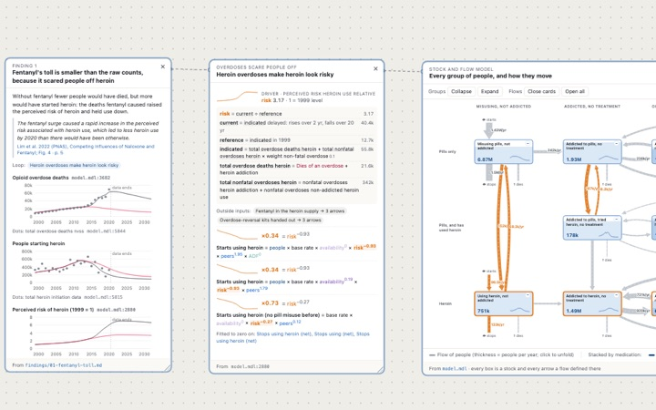
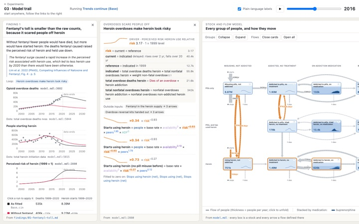
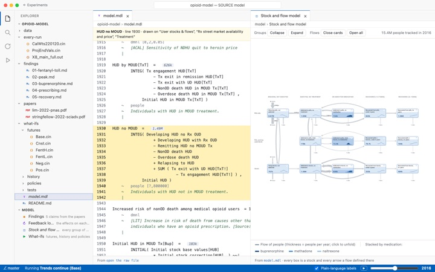
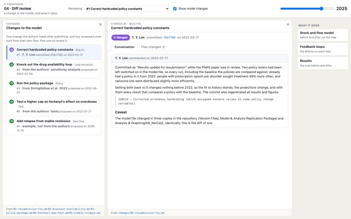

As a graph
Panels unfold on a board, wired to the panel they came from.
Ways to look at one model, from Lim et al. 2022 (PNAS), running live in your browser.

Panels unfold on a board, wired to the panel they came from.

Panels side by side; each link opens to the right.

The model's files, with the running model beside the code.

Changes to the model reviewed like pull requests: the diff, and what it does to the map, the loops and the results.